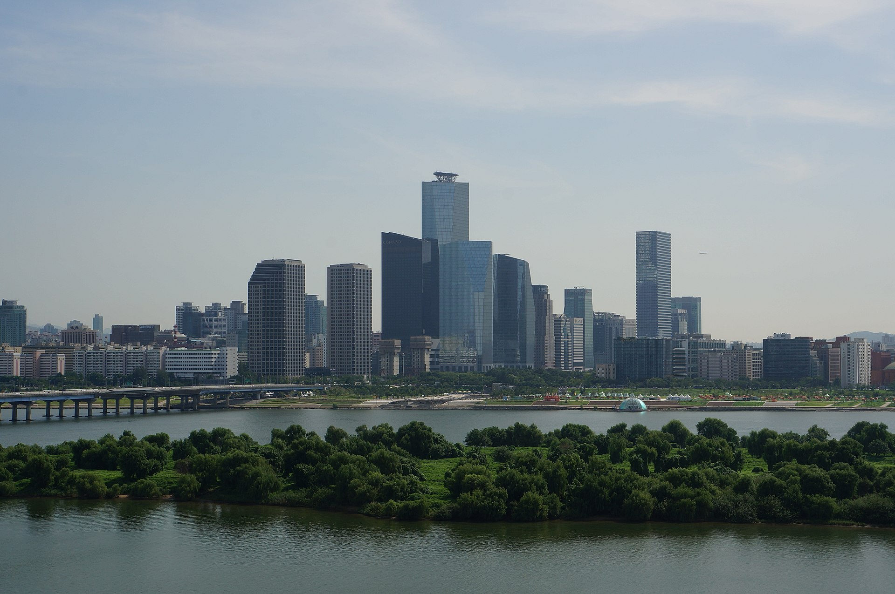

O‘zbekiston va Janubiy Koreya Seulda 13 hujjat imzoladi
Mirziyoyev va Li Che Myon muzokaralari yakunida kritik minerallar, sun’iy intellekt va mudofaa bo‘yicha hamkorlik hujjatlari almashildi. Uchrashuv 16-sentabrdagi birinchi Koreya–Markaziy Osiyo sammiti arafasida o‘tdi.

2026-yil 14-sentabr, Seul. O‘zbekiston Prezidenti Shavkat Mirziyoyev va Janubiy Koreya Prezidenti Li Che Myon o‘rtasidagi muzokaralar yakunida ikki davlat 13 ta hujjat va memorandum almashdi.
Nima imzolandi
Hujjatlar transport, fuqaro aviatsiyasi, qishloq xo‘jaligi, turizm, ta’lim, sun’iy intellekt, texnik yordam, tibbiy mahsulotlarni tartibga solish, atrof-muhitni muhofaza qilish, intellektual mulk va arxiv ishi kabi sohalarni qamrab oladi.
Korea Eximbank va O‘zbekiston investitsiyalar vazirligi olti ustuvor yo‘nalish bo‘yicha loyihalarni aniqlash va moliyalashtirish imkoniyatlarini ko‘rib chiqishga kelishdi: kritik minerallar, sun’iy intellekt va data-markazlar, smart-shaharlar, koreys kompaniyalari uchun sanoat majmuasi, farmatsevtika va biotexnologiya, hamda oziq-ovqat, go‘zallik va madaniyat sanoati.
Eng aniq mudofaa natijasi — Korea Aerospace Industries kompaniyasining o‘zbek hamkori bilan mudofaa sanoati hamkorligi bo‘yicha shartnomasi. Koreya hukumatining e’lon qilingan xulosasida na uskuna turi, na shartnoma summasi ko‘rsatilgan.
Raqamlarda
- Imzolangan hujjatlar: 13 ta
- Istiqbolli investitsiya loyihalari: ~12 mlrd dollar
- Korea Eximbank bilan strategik hamkorlik dasturi: 8 mlrd dollar
- Yuqori tezlikli poyezdlar bo‘yicha TIA memorandumi: 8 ta poyezd
- O‘zbekistondagi koreys kapitalili korxonalar: 700 dan ortiq
- To‘plangan koreys investitsiyasi: 8 mlrd dollardan ortiq
Poyezdlar va biobank
Tomonlar yana sakkizta yuqori tezlikli poyezd bo‘yicha texnik-iqtisodiy asoslash ishlarini boshlash to‘g‘risidagi memorandumni imzoladi. Bu — yetkazib berish shartnomasi emas, balki dastlabki bosqich. 2024-yilda O‘zbekiston Hyundai Rotem kompaniyasidan oltita yuqori tezlikli poyezd sotib olishga kelishgan edi.
Alohida memorandum Koreyaning Iqtisodiy taraqqiyot hamkorlik jamg‘armasi (EDCF) doirasida O‘zbekistonda milliy genom va biobank markazi — “Biome Center” tashkil etishni ko‘zda tutadi.
Transport infratuzilmasi, sog‘liqni saqlash va iqlim inqiroziga javoblardan tortib kritik minerallar ta’minot zanjirlari, sun’iy intellekt va raqamli transformatsiya hamda mudofaagacha — o‘zaro manfaatli hamkorlik ufqlarini kengaytira olamiz.
— Li Che Myon, Janubiy Koreya prezidenti (The Korea Herald tarjimasidan, 14.09.2026)
Kontekst
Uchrashuv Seul mezbonlik qilayotgan birinchi Koreya–Markaziy Osiyo sammiti arafasida bo‘lib o‘tdi. Sammit 16-sentabrga rejalashtirilgan bo‘lib, unga O‘zbekiston, Qozog‘iston, Qirg‘iziston, Tojikiston va Turkmaniston davlat rahbarlari taklif etilgan.
O‘zbekistonda 700 dan ortiq koreys kapitalili korxona faoliyat yuritadi, jumladan Samsung, LG, Lotte va KIA. To‘plangan koreys investitsiyasi hajmi 8 mlrd dollardan oshgan.